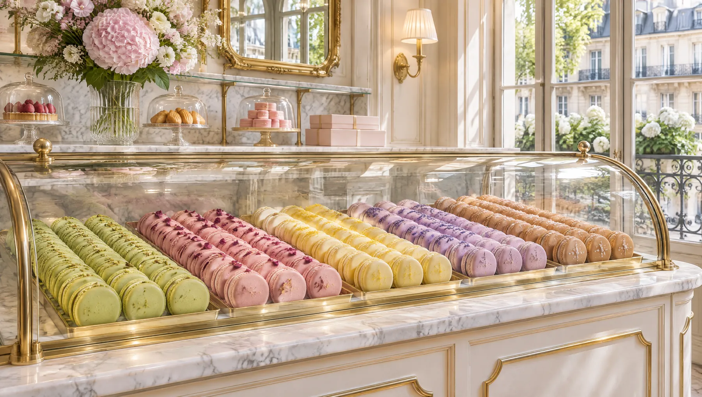
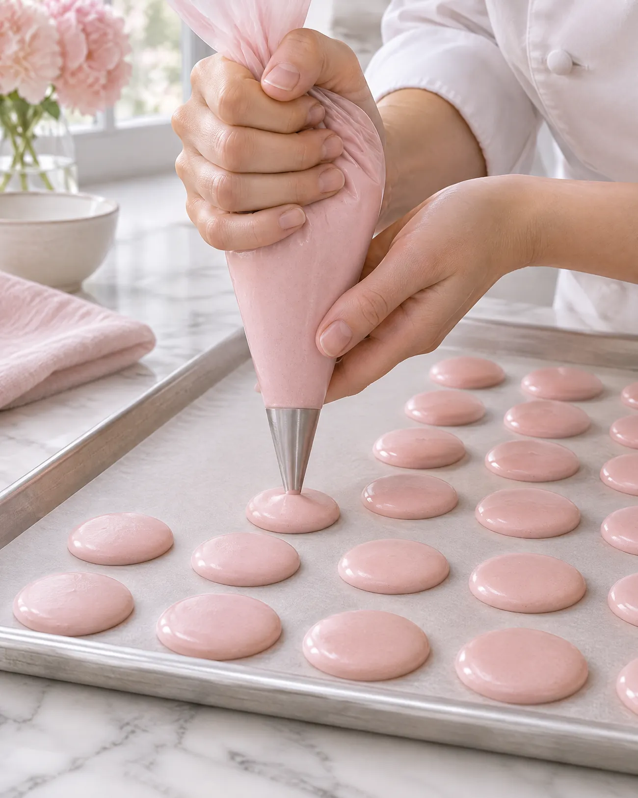
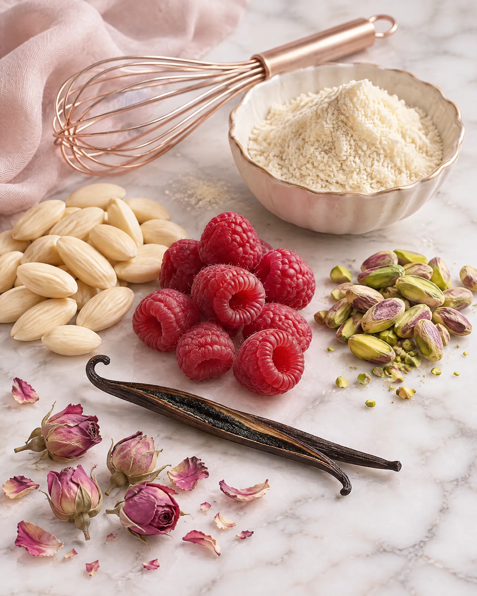

Coffret de 6
Le Croissant
Les six classiques, un de chaque. Le bon format pour goûter la maison.
16 €Pâtissier · Macarons · Lyon
Deux coques, une ganache, et le temps qu'il faut entre les deux. Nos macarons sont pochés chaque matin, à la main, au fond d'un passage de la Presqu'île.
01 — La coque
Poudre d'amande tamisée deux fois, meringue italienne, puis vingt-quatre heures de croûtage à l'air libre. Ce repos donne à la coque sa peau lisse et, au four, sa collerette.
02 — Le cœur
Sous la coque, une ganache montée à la vanille, pochée en spirale. Et au centre, là où on ne l'attend pas, une framboise fraîche des monts du Lyonnais.
03 — Les parfums
Framboise, pistache, citron, lavande, caramel, vanille : les six classiques de la maison, montés en pièce pour les grandes tables. Quatre autres parfums suivent les saisons.
Les parfums du momentCoffrets de 6, 12 ou 24 pièces
Choisissez vos parfums, nous faisons le reste : papier de soie, ruban, et un mot écrit à la main si vous le souhaitez.
Les parfums du moment
Six classiques toute l'année, quatre parfums de saison. La carte ci-dessous est celle de l'automne ; les prix s'entendent à la pièce.
Ganache montée à la vanille, framboise entière au cœur
Pâte de pistache torréfiée à la maison, pointe de fleur de sel
Crème de citron jaune, zestes confits, basilic frais
Ganache au miel de lavande, infusion de fleurs séchées
Caramel cuit à sec, beurre demi-sel, vanille grattée
Trois vanilles infusées une nuit dans la crème
De saison — crème de marron, dés de poire pochée
De saison — praliné à l'ancienne, éclats caramélisés
De saison — ganache noire à 70 %, fève tonka râpée
De saison — crème à la rose, litchi frais, pétale cristallisé
Coffret de 6
Les six classiques, un de chaque. Le bon format pour goûter la maison.
16 €Coffret de 12
Douze places sur deux rangées : à composer librement parmi les dix parfums.
30 €Coffret de 24
Deux étages, toute la carte, et la place de doubler vos préférés.
58 €Sur commande
Pièce montée de 48 à 200 macarons, livrée et dressée sur son présentoir.
165 € dèsNos macarons se gardent quatre jours au frais. Sortez-les vingt minutes avant de les servir : c'est à 18 °C qu'ils sont les meilleurs.
La boutique
La boutique ouvre à dix heures, quand la dernière plaque sort du laboratoire, juste derrière le comptoir. À midi, il manque déjà des couleurs.


Le geste
La poche se tient droite, à un centimètre de la plaque. Une pression, un quart de tour du poignet, et la coque s'étale seule. Quatre-vingts par plaque, toutes de la même taille : il faut une saison pour y arriver.
Ensuite, on attend. Le macaron est une pâtisserie de patience : il se fait la veille pour le lendemain, et se mange le surlendemain.

Les matières
Amandes de Provence moulues chez nous, pistaches torréfiées à la commande, vanille en gousse. Les couleurs viennent des fruits, des fleurs et des épices ; quand la nature ne donne pas la teinte, la coque reste pâle.
« La coque cède sans bruit, puis la framboise arrive. On en reprend un pour vérifier. »
Commander un coffret
Réservez la veille avant dix-huit heures : nous composons le coffret le matin même, et il vous attend en boutique, ruban noué.